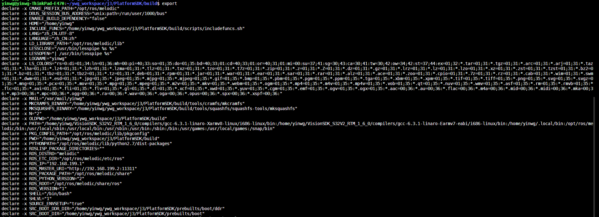

7.3.1. shell基本语法
7.3.1.1. 变量
定义变量时,变量名和=之间不能有空格，需遵循以下规则
命名只能使用字母，数字和下划线，首个字符不能是数字
中间不能是空格
不能使用bash里的关键字
使用readonly命令可以将变量定义为只读变量
myname="ywg"
readonly myname
myname="jxn"
运行脚本,会提示
行 5: myname：只读变量
unset命令可以删除变量,删除后变量不能再次使用，不能删除只读变量
unset myurl
字符串
拼接字符串
拼接字符串可以使用单引号也可以使用双引号，但是单引号中的字符会原样输出，单引号中字符串的变量是无效的
your_name="runoob"
# 使用双引号拼接
greeting="hello, "$your_name" !"
greeting_1="hello, ${your_name} !"
echo $greeting $greeting_1
# 使用单引号拼接
greeting_2='hello, '$your_name' !'
greeting_3='hello, ${your_name} !'
echo $greeting_2 $greeting_3
输出结果为
hello, runoob ! hello, runoob !
hello, runoob ! hello, ${your_name} !
获取字符串长度
string=="abcd"
echo ${#string} #输出4
提取字符串
string="this is a test string"
echo "${string:1:3}" #输出his
查找字符串
string="this is a test string"
echo `expr index "${string}" g` #输出21
数组
shell支持一维数组，不支持多维数组
获取数组长度
array=(1 2 3 4 5)
length=${#array[@]}
echo ${length} #输出为5
length=${#array[*]}
echo ${length} #输出为5
echo ${array[@]} #输出 1 2 3 4 5
7.3.1.2. 基本运算符
shell支持多种运算符，包括
算数运算符
关系运算符
布尔运算符
字符串运算符
文件测试运算符
算数运算符
运算符 |
描述 |
+ |
加法 |
- |
减法 |
* |
乘法 |
/ |
除法 |
% |
取余 |
= |
赋值 |
== |
相等 |
!= |
不相等 |
备注
表达式在方括号中间时要有空格,[$a==$b]是错误的，必须写成[ $a == $b ]
关系运算符
关系运算符支持数字，不支持字符串
运算符 |
说明 |
-eq |
两个数是否相等 |
-ne |
两个数是否不相等 |
-gt |
左边的是否大于右边的 |
-lt |
左边的是否小于右边的 |
-ge |
左边的是否大于等于右边的 |
-le |
左边的是否小于等于右边的 |
布尔运算符
运算符 |
说明 |
! |
非运算 [ ! false ]返回true |
-o |
或运算 [ $a -lt $b -o $b -eq 100 ] |
-a |
与运算 [ $a -gt $b -a $a -ne 50 ] |
逻辑运算
运算符 |
说明 |
&& |
逻辑的AND |
|| |
逻辑的OR |
字符串运算符
运算符 |
说明 |
= |
检测两个字符串是否相等 |
!= |
检测两个字符串是否不相等 |
-z |
检测字符串长度是否为0 |
-n |
检测字符串长度是否不为0 |
$ |
检测字符串是否为空 |
文件测试运算符
运算符 |
说明 |
-b file |
检测文件是否是块设备文件 |
-c file |
检测文件是否是字符设备文件 |
-d file |
检测文件是否是目录 |
-f file |
检测文件是否是普通文件 |
-g file |
检测文件是否设置了SGID位 |
-u file |
检测文件是否设置了SUID位 |
-p file |
检测文件是否是有名管道 |
-r file |
检测文件是否可读 |
-w file |
检测文件是否可写 |
-x file |
检测文件是否可执行 |
-s file |
检测文件是否为空 |
-e file |
检测文件是否存在 |
-L file |
检测文件是否是链接文件 |
-S file |
检测文件是否是socket文件 |
7.3.1.3. shell流程控制
7.3.1.3.1. if判断
if语句语法格式
if condition
then
command1
command2
fi
if else 语句语法格式
if condition
then
command1
else
command2
fi
if else-if else语句语法格式
if condition1
then
command1
elif condition2
then
command2
else
command3
fi
7.3.1.3.2. for循环
for循环语法格式
for var in item1 item2 ... itemn
do
command
done
7.3.1.3.3. while语句
while condition
do
command
done
无限循环
while true #或者while :
do
command
done
7.3.1.3.4. case … esac语句
case var in
mode1)
command1
;;
mode2)
command2
;;
*)
command3
;;
esac
跳出循环
shell中使用break和continue两个命令跳出循环.break命令允许跳出所有循环,continue仅仅跳出当前循环
#!/bin/bash
while true
do
echo -n "输入1到5之间的数字"
read num
case ${num} in
1|2|3|4|5)
echo "你输入的数字为${num}"
;;
*)
echo "你输入的数字超出范围"
break
;;
esac
done
7.3.1.4. shell函数
shell中函数定义格式如下
[function] funname[()]
{
action;
[return int;]
}
说明:
可以带function fun()定义，也可以直接fun()定义
参数返回可以显示加return返回，如果不加将以最后一条命令运行结果作为返回值，return后可以跟(0-255)
7.3.1.5. 输入输出重定向
命令 |
说明 |
command > file |
将输出重定向到file |
command < file |
将输入重定向到file |
commnad >> file |
将输出以追加的方式重定向到file |
n > file |
将文件描述符为n的文件重定向到file |
n >> file |
将文件描述符为n的文件以追加的方式重定向到file |
n>&m |
将输出文件m和n合并 |
n<&m |
将输入文件m和n合并 |
<< tag |
将开始标记tag和结束标记tag之间的内容作为输入 |
备注
文件描述符0为标准输入(STDIN),1是标准输出(STDOUT),2是标准错误输出(STDERR) 2>之间不可以有空格，只有在一体的时候才表示错误输出
command > file 2>&1 #将stdout和stderr合并后重定向到file
command < file1 > file2 #stdin重定向到file1，stdout重定向到file2
command > /dev/null 2>&1 #屏蔽输出
here document是shell种一种特殊的重定向方式，用来将输入重定向到一个交互式shell脚本或程序
基本形式如下
command << delimiter
document
delimiter
备注
结尾的delimiter一定要顶格写,前面不能有任何字符
例
multi.sh
#!/bin/bash
read -p "enter number:" no
read -p "enter name:" name
echo "your have entered $no, $name"
#!/bin/bash
bash multi.sh << EOF
28
ywg
EOF
7.3.1.6. shell文件包含
shell文件包含语法格式
. filename #注意点号(.)和文件名中间有一个空格
或者
source filename
备注
被包含的文件不需要可执行权限
7.3.1.7. shell特殊变量
变量 |
含义 |
|---|---|
$0 |
当前脚本的文件名 |
$n |
传递给脚本或者函数的参数，n是一个数字 |
$# |
传递给脚本或者函数的参数个数 |
$* |
传递给脚本或者函数的所有参数 |
$? |
上个命令的退出状态 |
$$ |
当前shell进程的ID |
export可以查看当前shell中已经设置好的环境变量,也可以使用export设置环境变量

7.3.1.8. shell中括号用法
shell中{}与()的区别
() 执行一串命令时，需要重新开启一个子 Shell 来执行。
{} 执行一串命令时，在当前 Shell 中执行。
() 和 {} 都是把一串命令放田括号里面，并且命令之间用”;”隔开。
() 最后一条命令可以不用分号。
{} 最后一条命令要用分号。
{} 的第一条命令和左括号之间必须有一个空格。
() 里的各命令不必和括号有空格。
() 和 {} 中括号里面的某条命令的重定向只影响该命令，但括号外的重定向则会影响到括号里的所有命令。
7.3.1.8.1. 小括号、圆括号
单小括号()
命令组.括号中的命令将会新开一个子shell顺序执行，座椅括号中的变量不能够被脚本余下的部分使用，括号中的多个命令用分号隔开，最后一个命令可以没有分号 各命令和括号之间不必有空格
命令替换。等同于 cmd ,shell扫描一遍命令行，发现了$(cmd)结构，便将$(cmd)中的cmd执行一次，得到其标准输出，再将此输出放到原来的命令
用于初始化数组。如 array=(a b c d)
双小括号(())
整数扩展。这种扩展计算式整数型的计算，不支持浮点型。((exp))结构扩展并计算一个整数表达式的值，如果表达式的结构为0，那么返回的退出状态码为1,或者是假，而一个非0值得表达式所返回 的退出状态码为0，或者为true. 若是逻辑判断，表达式exp为真则为1，假则为0
只要括号中的运算符，表达式符合C语言运算规则,都可在((exp))
常用作算术运算比较，双括号中的变量可以不使用$符号前缀 如 for((i=0;i<5;i++))
7.3.1.8.2. 中括号
单中括号
bash内部命令,[和test是等同的。if/else结构中左中括号是调用test的命令标识，右中括号是关闭条件判断的。
备注
shell中test命令用于检查某个条件是否成立，它可以进行数值、字符和文件三个方面的测试
[]中可用的比较运算符只有==和!=，两者都是用于字符串比较的，不可以用于整数比较，整数比较只能用-eq, -gt这种形式
作为test用途的中括号内不能使用正则
在一个array结构的上下文中，中括号用来引用数组中每个元素的编号
双中括号
[[是bash程序语言的关键字，并不是一个命令，[[]]结构比[]结构更加通用，在[[]]之间的所有字符都不会发生文件名扩展或者单词分割，但是会发生参数扩展和命令替换
支持字符串的模式匹配，字符串比较时可以把右边的作为一个模式不仅仅是一个字符串,支持正则表达式 比如 [[ hello == hell? ]]
使用[[…]]条件判断结构，而不是[…],能够防止脚本中许多逻辑错误，比如,&& || <>操作符能够正常存在于[[]]条件判断中，但是出现在[]结构中会报错 比如 if [[ $a != 1 && $a !=2 ]] 等同于 if [ $$a -ne 1 ] && [ $a !=2 ]
bash中把双中括号中的表达式看作一个单独的元素，并返回一个退出状态码
7.3.1.8.3. 大括号、花括号
常规用法
大括号扩展。通配将对大括号中的文件名做扩展，在大括号中不允许有空白，除非这个空白被引用或者转义。第一种对大括号中以逗号分隔的文件列表进行扩展，如touch {a,b}.txt结果为a.txt b.txt 第二种：对大括号中以..分割的顺序文件列表起拓展作用如 touch {a..d}.txt 结构为a.txt b.txt c.txt d.txt
代码块，又被称为内部组，这个结构事实上创建了一个匿名函数。与小括号中的命令不同，大括号内的命令不会新开一个子shell运行。括号内的命令间用分号隔开，最后一个也必须有分号。{}的第一 个命令和左括号之间必须要有一个空格
几种特殊的替换结构
${var:-string},${var:+string},${var:=string},,${var:?string}
${var:-string}若var变量为空,则用在命令行中用string来替换${var:-string},不为空则用变量var的值来替换${var:-string}.
${car:=string}若var变量为空,则用在命令行中用string来替换${var:-string}同时用string赋值给var,不为空则用变量var的值来替换${var:-string}.
${var:+string}与${var:-string}用法相反
${var:?string}若变量var不为空，则用变量var的值来替换${var:?string}；若变量var为空，则把string输出到标准错误中，并从脚本中退出
四种模式匹配替换结构
模式匹配记忆方法
# 是去掉左边(在键盘上#在$的左边)
% 是去掉右边(在键盘上%在$的右边)
${var%pattern},${var%%pattern},${var#pattern}${var##pattern}
例
# var=testcase
# echo $var
testcase
# echo ${var%s*e}
testca
###此模式下，shell在var中搜索是否符合pattern模式，如果是则去掉右边最短的匹配模式
# echo $var
testcase
# echo ${var%%s*e}
te
###此模式下，shell在var中搜索是否符合pattern模式，如果是则去掉右边最长的匹配模式
# echo ${var#?e}
stcase
###此模式下，shell在var中搜索是否符合pattern模式，如果是则去掉左边最短的匹配模式
# echo ${var##?e}
stcase
# echo ${var##*e}
# echo ${var##*s}
e
###此模式下，shell在var中搜索是否符合pattern模式，如果是则去掉左边最长的匹配模式
# echo ${var##test}
case
字符串提取和替换
${var:num},${var:num1:num2},${var/patttern/pattern},${var//pattern/pattern}
第一种模式：这种模式下提取var中第num个字符到末尾的所有字符
第二种模式: 提取var中num1到num2的字符
第三种模式: 将var中第一个匹配到的pattern替换为另一个pattern
第四种模式: 将var中所有能匹配到的pattern替换为另一个pattern